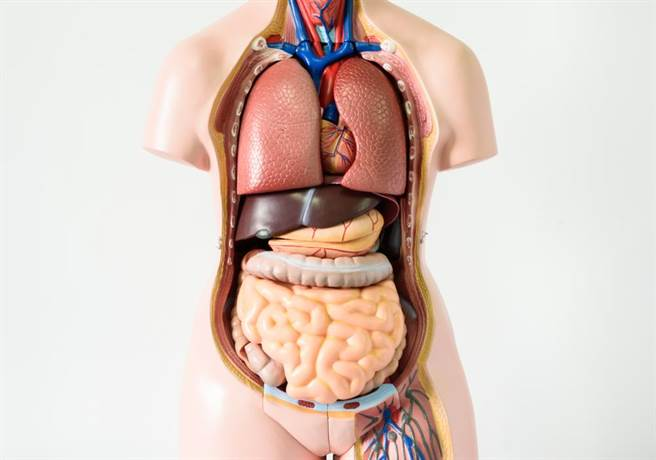

🫀 互動式人體解剖圖表
點擊器官標記查看詳細資訊，體驗 JavaScript DOM 操作和事件處理。使用真實的人體解剖圖展示器官位置。

選擇器官查看詳細資訊
未選擇
點擊人體解剖圖上的器官標記來了解更多資訊。每個器官都有詳細的功能說明、位置描述和相關疾病資訊。這張解剖圖展示了真實的人體內部結構。
選擇器官後，這裡將顯示詳細的醫學資訊
🔍 智能搜尋系統
即時搜尋醫學資料，支援多條件篩選和智能建議
搜尋結果
0 個結果
輸入關鍵字開始搜尋醫學資料
💾 資料管理系統
本地儲存、用戶偏好設定和學習進度追蹤
學習進度
器官學習
75%
疾病知識
45%
症狀識別
30%
收藏夾
心臟
循環系統核心器官
肺臟
呼吸系統主要器官
用戶設定
🔄 動態內容載入
非同步載入醫學資料、圖片和相關內容
準備載入內容
點擊上方按鈕開始載入不同的醫學資料
0
已載入項目
0
載入時間 (ms)
0
快取命中